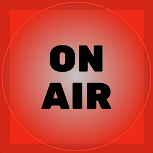

ATEM TallyПоддержка
ATEM Tally для iPhone и Apple Watch: подключение к микшеру, цвет эфира, вибрация и сигналы от режиссёра.
Нашли ошибку или есть вопрос — создайте обращение в GitHub Issues. Напишите модель микшера, модель iPhone, версию iOS и что происходило.
Подключение
Микшер не находится сам.
Поиск слышит только микшеры, которые объявляют себя в сети. Введите адрес руками — его видно в ATEM Software Control.
«Нет ответа от микшера».
Телефон и микшер должны быть в одной сети, и не в гостевой Wi-Fi: там устройства изолированы. В Настройках iOS → Конфиденциальность и безопасность → Локальная сеть доступ для ATEM Tally должен быть включён.
Связь рвётся, когда телефон лежит в кармане.
Приложение должно оставаться открытым на экране: в фоне iOS обрывает соединение. Поставьте телефон на камеру и не сворачивайте приложение.
Цвет и вибрация
Экран не меняет цвет.
Проверьте, что выбран ваш вход: он выбирается по названиям, заданным на микшере. Если входы переименовали, выберите камеру заново.
Вибрация срабатывает слишком часто.
В настройках есть тихий режим для превью: тогда вибрация только при выходе в эфир.
Часы молчат.
Приложение на часах должно быть открыто или хотя бы недавно запущено: цвет и сигналы приходят с iPhone, а не напрямую от микшера.
Сигналы от режиссёра
Сигналы не приходят.
Нужны ATEM Tally 1.5 или новее и ATEM Control 2.1 или новее на телефоне режиссёра. Оба телефона — в одной сети, у обоих приложений включён доступ к локальной сети.
Приходят чужие сигналы.
Общие сигналы режиссёр шлёт всей команде. Адресные приходят только на выбранный вами вход — проверьте, что выбрана ваша камера.
Не хочу их видеть.
Выключите приём в настройках: тогда приложение к телефону режиссёра не подключается вовсе.
Карточка исчезает слишком быстро.
Сигнал живёт на экране восемь секунд. Коснитесь его, пока он виден, — режиссёр увидит, что вы прочитали.
Support
ATEM Tally for iPhone and Apple Watch: connecting to the switcher, the tally colour, haptics and cues from the gallery.
Found a bug or have a question — open an issue on GitHub Issues. Include the switcher model, the iPhone model, the iOS version and what happened.
Connecting
The switcher is not found automatically.
The search only hears switchers that announce themselves on the network. Type the address instead; ATEM Software Control shows it.
"No answer from the switcher".
The phone and the switcher have to be on the same network, and not on a guest Wi-Fi, where devices are isolated. In iOS Settings → Privacy & Security → Local Network, ATEM Tally must be allowed.
The link drops when the phone is in a pocket.
The app has to stay on screen: in the background iOS closes the connection. Mount the phone on the camera and leave the app open.
Colour and haptics
The screen does not change colour.
Check that your input is selected; inputs are listed by the names set on the switcher. If they were renamed, pick your camera again.
It buzzes too often.
Settings has a quiet preview mode: then it only buzzes when you actually go on air.
The watch stays silent.
The watch app has to be open, or at least recently used: the colour and the cues come from the iPhone, not straight from the switcher.
Cues from the gallery
No cues arrive.
You need ATEM Tally 1.5 or later and ATEM Control 2.1 or later on the operator's phone. Both phones on the same network, and local network access allowed for both apps.
Cues meant for someone else.
A cue to the whole crew reaches everyone. An addressed cue reaches only the phone on that input — check that your camera is selected.
I don't want to see them.
Turn cues off in settings; the app then does not connect to the operator's phone at all.
The card disappears too quickly.
A cue stays on screen for eight seconds. Tap it while it is there and the operator sees that you have read it.